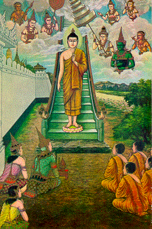

BuddhaSasana Home Page
This document is written in Vietnamese, with
Unicode Times font
| 29 | 30 |
|  | |
| In the day the Buddha was
descending from Tavatimsa heaven, both men and gods were crowded. The Buddha mystically
showed all worlds to the crowd. Vào ngày Ðức Phật từ cung trời Ðao-lợi trở về, chư thiên và loài người tề tụ nghênh đón. Ðức Phật dùng thần thông cho họ thấy được toàn thể mọi thế giới. |
Angulimala, the bandit, tried to
kill his mother. When he saw the Buddha walking for alms round, he changed his mind and
wanted to kill the Budha and ordered Him to stop. The Buddha said He had already stopped,
He meant He had stopped from killing. Angulimala suddently understood, dropped his weapon,
and asked to be ordained. He later became an Arahat. Angulimala, tên cướp sát nhân, định giết mẹ của hắn. Khi gặp Ðức Phật đang đi trì bình, hắn đổi ý và muốn sát hại Ðức Phật. Hắn chạy theo Ðức Phật và gọi Ngài hãy đứng lại. Ngài trả lời là Ngài đã dừng lại từ lâu, có nghĩa là Ngài đã ngưng mọi hành động sát hại. Angulimala tỉnh ngộ, quăng bỏ khí giới, và xin thọ giới. Về sau, ông ta đắc quả A-la-hán. |
[Mục Lục][01-02][03-04][05-06][07-08][09-10][11-12][13-14]
[15-16][17-18][19-20][21-22][23-24][25-26][27-28][29-30][31-32]
Source: Post Cards from S. Dhumphakdi & Sons Publisher, Bangkok, Thailand